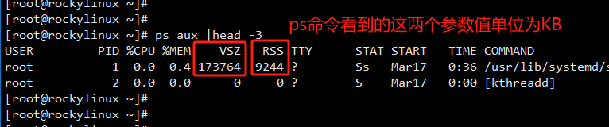
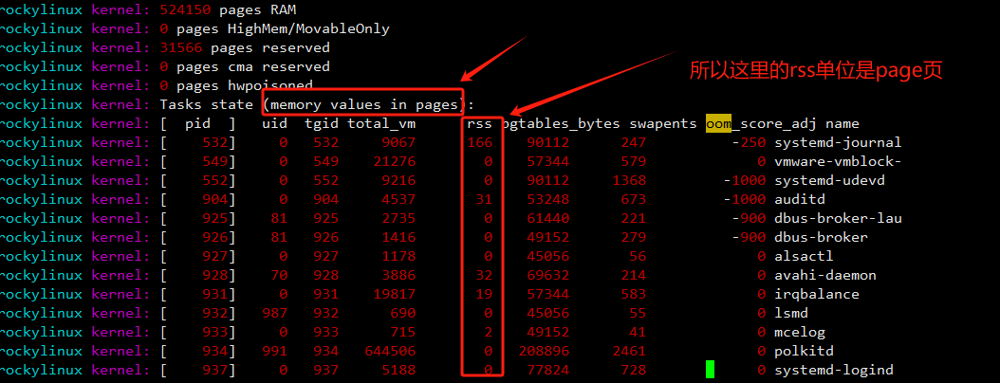

系统优化
系统内核优化
文件描述符和进程
系统正在经历着高并发访问，会涉及到打开很多文件，每个打开的文件都会对应一个文件描述符，而文件描述符是有上限的，达到上限将无法继续同时打开更多的文件，访问也就会受到限制，所以需要加大文件描述符与最大打开的进程数
- 硬限制（hard limit）一旦被设置以后就不能被非root用户修改
- 软限制（soft limit）可以增长达到硬限制（hard limit）。
- 硬限制（hard limit）一旦被设置以后就不能被非root用户修改，软限制（soft limit）可以增长达到硬限制
大型高并发项目可以设置为1000000，如果是一般中型项目几十万就可以了
1 | cat >>/etc/security/limits.conf<<EOF |
调整Kernel pid max
1 | 此文件的默认值32768将产生与早期内核相同的pid范围。在32位平台上，32768是pid最大值。在64位系统上，pid最大值可以设置为2^22等于4194304（pid最大值限制,大约400万）。 |
其他内核优化
1 | [root@egon ~]# cat >>/etc/sysctl.conf<<EOF |
OOM与内存相关优化
buffer、cache、avalable
free -h 各部分含义
- total：这行展示了系统的总内存。
- used：这是已被进程使用但目前还没有释放的内存。这部分内存不包括 “buff/cache” 这行所表示的内存。
- free：这部分包括没有被任何形式的缓存使用的内存。
- shared：这部分是tmpfs（Shmem）占用的内存。
- buff/cache：这个数值是 Buffer（像是文件系统元数据和跟踪的内存）和 Cache（被各种进程用来映射各种库、调用的内存）的总和。
- available：这个是给应用程序实际可以分配的内存。
cache等于page cache缓存+slab缓存
在 free -h 结果中，cache 是包括了 Page Cache 和 Slab 的总和。
Page Cache：称为页面缓存，用于文件的缓存，即以页为单位，为了加快文件的读写，内核中提供了page cache作为缓存。
另外，还有另一个名为 Slab 的内存对象缓存层，它包括了两个子系统 dentry cache（目录条目缓存）和 inode cache（索引节点缓存）。这两者以及其它的 slab 缓存也会被算入 free -h 结果中的 cache。
VSZ虚拟内存与RSS物理内存
linux系统的内存是超配的，进程最先申请到的都是VSZ虚拟内存
只有真正用的时候才会真正的占用，真正占用的部分就是RSS物理内存，也称之为匿名内存，这部分内存大都是没有刷入磁盘的数据，所以也叫脏数据，因为没有落盘所以数据不安全容易丢
我们可以用ps aux看到VSZ与RSS。注意：ps 命令看到的VSZ与RSS的值单位是KB两个参数名，值可不一定是KB哦！

swap分区
系统总是在物理内存不够时，才进行Swap交换。swap大小是有上限的，一旦swap使用完，操作系统会触发OOM-Killer机制，把消耗内存最多的进程kill掉以释放内存
所以swap分是物理内存不够用时的保命措施，一旦用了速度必然是慢了，但是能保命
swap分区工作原理：https://egonlin.com/?p=7605
内存不足时linux系统会如何处理？
当 CentOS 7 系统的内存快用完的的时候，操作系统会按下述顺序运行（清空持续恶化则会按一个个阶段走下去）
- 阶段1：Buffers 和 Cache 清理：首先，当内存开始变得紧张时，系统会开始回收Buffers和Cache中的内存。这些缓存的内容如果需要，能很快被重新生成，因此它们是最先被系统考虑回收的部分。
- 阶段2：启动 Swapping：然后，如果确定缓存无法满足内存需求，即便在清理了Buffers和Cache后，内存仍然紧张，那么系统会开始 Swapping。这个阶段系统开始将一部分内存中的内容（通常是最近不活跃的进程）放入swap磁盘空间中，以腾出内存空间。这个阶段是有性能损失的，因为与读写内存相比，读写硬盘的速度要慢得多。
- 阶段3：启动 OOM Killer：最后，如果在启动了Swapping之后内存压力仍然很大，系统就会启动OOM Killer。OOM Killer会选择一些“牺牲品”，杀掉这些进程，以此释放内存。选择牺牲品的策略有很多，但通常来说，被杀掉的进程会是那些占用内存较多、优先级较低、启动时间较长的进程。
OOM相关知识
详见：https://egonlin.com/?p=7401
强调一点：我们在/var/log/messages日志里看到的oom事件会罗列进程的RSS，此处看到的单位时一个内存页，大小默认4K，这与你在ps aux里看到的RSS不是一个单位

调整swappiness
在宿主机上，配置内核参数swappiness来控制全局
swapiness参数该参数可以决定系统将会有多频繁地使用交换分区。
1 | [root@test04 ~]# cat /proc/sys/vm/swappiness |
要注意，page cache与swap分区都是内存的优化方案，
- 1、page cache
linux系统会把空闲的内存用作page cache以优化磁盘的读写，当物理内存不够用时，如果我们没有开启swap分区，那么linux系统就只能释放page cache来给rss用。
- 2、swap分区
对于物理内存rss里，大部分是没有对应磁盘文件的内存，比如用malloc申请到的内存，这种内存也称之为匿名内存，是不能被释放的。
如果打开了swap分区，在内存不足时，就可以考虑数据写入swap分区，而写入swap分区的都是来自rss的匿名内存。
那问题是，在物理内存不足时，是释放page cache还是使用swap分区呢？说白了，单独用谁都不合理，因为如果只释放page cache，有可能需要频繁读写一个文件，释放了page cache必然引起系统性能下降，如果只写把匿名内存写入swap分区，那一旦从rss释放到的匿名内存马上又需要使用，你又必须从swap分区里把刚刚写入的匿名内存数据重新读入内存，这同样会导致系统性能下降
所以，我们必须要找到一个page cache与swap分区的平衡点，这就需要用到swapiness
swappiness 的取值范围是 0–100，缺省值为 60
该值代表的是一个权重，用来定义page cache与匿名内存的释放比例，这个比例是anon_prio:file_prio
如下swapiness相关代码，anno_prio就等于swapniess的值，代表的是匿名内存释放的比重，即使用swap分区的比重
1 | swappiness 为 100 时，anonymous 和 file 具有相同的优先级。 |
1、如果anno_prio为100，那么匿名内存与page cache的释放比重为 100:100，即等比例释放
2、如果anno_prio为60，那么匿名内存与page cache的释放比重为 60:140，那page cache的释放权重要优先于匿名内存
3、如果anno_prio为0，那么匿名内存与page cache的释放比重为 0:200，那page cache的释放权重必然是优先于匿名内存，但也不代表完全不使用用swap分区了，只是说尽量不使用swap，在内存紧张时，依然会用swap来回收匿名内存
1 | [root@egon ~~]# cat /proc/sys/vm/swappiness |